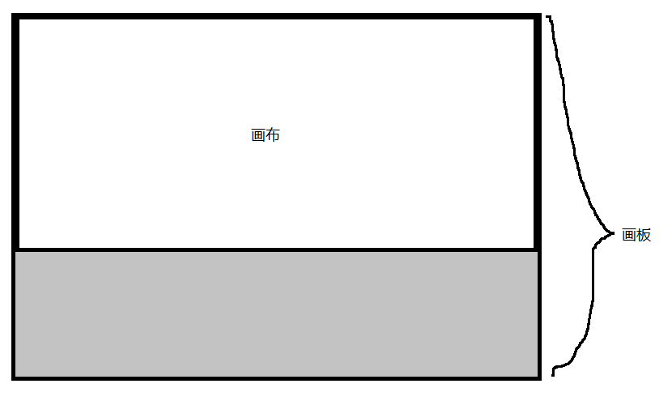

本片文章讲述了canvas画布与画板的区别，以及canvas一些常用知识点
一、canvas画布与画板宽高

二、选中canvas并获取画笔
var canvas = document.getElementById("");
var ctx = canvas.getContext("2d");
|
三、图形曲线
线
画线
ctx.lineWidth = 10;
ctx.moveTo(x1, y1);
ctx.lineTo(x2, y2);
ctx.lineTo(x3, y3);
ctx.stroke();
ctx.closePath();
ctx.fill();
ctx.beginPath();
...
|
贝塞尔曲线
ctx.quadraticCurveTo(Ax, Ay, Bx, By);
ctx.bezierCurveTo(Ax, Ay, Bx, By, Cx, Cy);
|
矩形
画常规矩形
起点坐标(x1, y1);
ctx.rect(x1, y1, width, height);
ctx.fill();
ctx.stroke();
ctx.strokeRect(x1, y1, width, height);
ctx.fillRect(x1, y1, width, height);
|
画圆角矩形
ctx.moveTo(x1, y1);
ctx.arcTo(x2, y2, x3, y3, arc);
|
清空一个矩形
ctx.clearRect(x1, y1, width, height);
|
圆弧
ctx.arc(a, b, r, arc1, arc2, d)
|
四、坐标轴
ctx.save();
ctx.restore();
ctx.rotate(arc);
ctx.translate(x, y);
ctx.scale(a, b);
|
五、背景填充
颜色填充
ctx.fillStyle = 'red';
ctx.fill();
|
图片填充
var img = new Image();
img.src = 'xxx';
img.onload = function() {
var bg = ctx.createPattern(img, 'no-repeat');
ctx.fillStyle = bg;
ctx.fill();
}
|
六、渐变
线性渐变
var bg = ctx.createLinearGradient(x1, y1, x2, y2);
bg.addColorStop(0, 'color');
...
bg.addColorStop(1, 'color');
ctx.fillStyle = bg;
ctx.fillRect();
|
辐射渐变
var bg = ctx.createRadialGradient(x1, y1, r1, x2, y2, r2);
bg.addColorStop(0, 'color');
...
bg.addColorStop(1, 'color');
ctx.fillStyle = bg;
ctx.fillRect();
|
七、阴影/文字/线段样式
阴影
ctx.shadowColor = 'blue';
ctx.shadowBlur = 10;
ctx.shadowOffsetX = 10;
ctx.shadowOffsetY = 10;
|
文字
ctx.strokeText('wuhao', x1, y1);
ctx.fillStyle = 'red';
ctx.fillText('wuhao', x1, y1);
|
线段样式
ctx.lineCap='but square round';
ctx.lineJoin='miter round bevel'
ctx.miterLimit = 10;
|